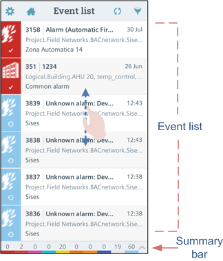
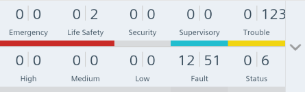
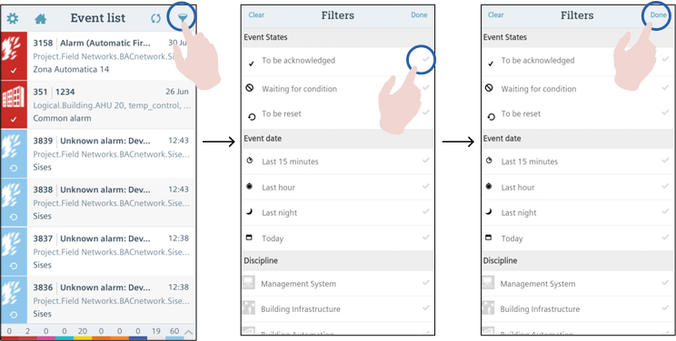
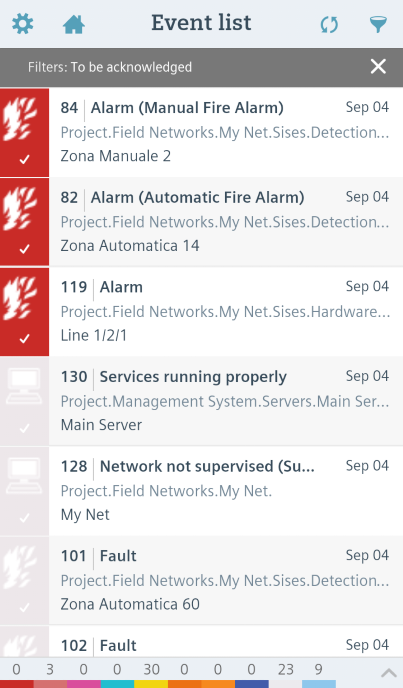
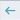
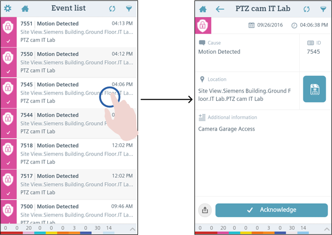
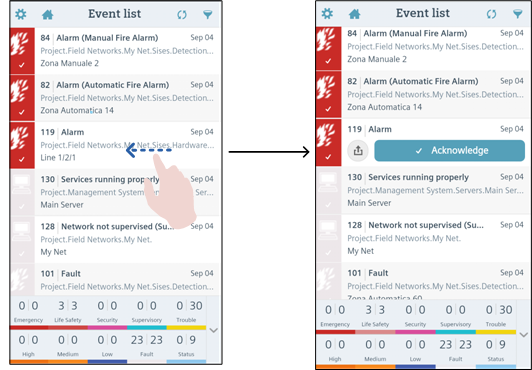
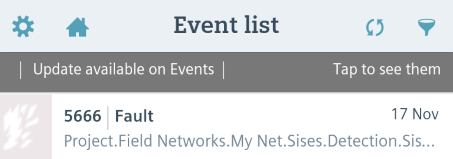

Using the Mobile App Event List
This section provides instructions for working with the mobile app event list. For background information, see the reference sections for event list and summary bar.
Prerequisites
- You are logged into the Desigo CC mobile app and connected to a Desigo CC management platform.
View the List of Events
- From the app Home page
 , tap the Event list button.
, tap the Event list button. - The screen displays a list of the events of the connected management platform. Each event occupies one line.
- The summary bar, at the bottom of the Event list screen, provides a compact overview of all the events in the system, grouped by categories. You can tap the arrow icon ( or ) to expand or collapse the summary bar.
- Swipe up or down to scroll through the list.
- By default, events are arranged by state (unacknowledged first), then by category (most severe first), and then by date (newest on top). For details see Change the Sorting of Events.

Filter Events by Category
You can use the summary bar to filter the event list by category.
- From the app Home page screen , tap Event list.
- At the bottom of the screen, tap to expand the Summary bar.
- In the Summary bar, tap a category lamp to filter the list for that category only. Tap again to remove the filter. Or tap other category lamps to filter by multiple categories.
- The Event list will now display only the events that match your selected categories. On the Summary bar, the categories you filtered out are displayed in gray. A gray bar along the top shows the filters that you applied.

Filter Events by Other Criteria
You want to filter the event list so that it only displays the events that match certain criteria (such as, category, discipline, date, or event status)
- From the app Home page , tap Event list.
- In the Event list action bar, tap Filter .
- Tap the filters you want to apply.
- In the title bar, tap Done.

- The Event list screen will now only show the events that match your selected criteria. A gray bar along the top shows the filters that you applied.

- To remove the filters, do one of the following:
- Tap Filter again, and then tap Clear.
- Tap the X in the gray filter bar along the top.
Notes on Filtering Criteria
Event Status:
To be acknowledged (ready to receive acknowledge command)
Waiting for condition (the alarm has been acknowledged but cannot yet be reset, typically because its cause still needs to be resolved)
To be reset (ready to receive reset command)
Event Date:
Last 15 min (events occurred during the past 15 min)
Last Hour
Last Night (from yesterday at 20:00 to today at 7:59)
Today (since today at 00:00).
Discipline: Management System, Security, and so on, depending on the management platform configuration.
Filtering Logic
[selected Event Statuses] AND [selected Event Dates] AND [selected Disciplines]
View Details of an Event
- From the app Home page , tap Event list.
- From the event list, tap an event.
- The full details about the event display on the screen.
- From here you can:
- Send an alarm-handling command.
- Send the details of the event to a contact.
- View the properties of the event source.
- When you are finished, tap the back arrow

in the action bar, or press the Back button on your device (Android), to go back to the event list.

Quickly Access Actions for an Event
You can quickly access the available actions for an event inline, without leaving the list.
- From the app Home page , tap Event list.
- From the event list, swipe left on an event.
- The available actions for that event display within the event line.
- From here you can:
- Send an alarm-handling command.
- Send the details of the event to a contact.
- Swipe right on the event to close the actions view and go back to the normal event line.

Share Details of an Event
You can forward all the details about an event to one or more contacts.
- From the app Home page , tap Event list.
- Tap on an event to open its event details screen. Or swipe left on an event to open its event actions view.
- Tap Share .
- Tap Email or SMS.
- The default SMS or email app displays a new message with the following event information:
- Cause of the event
- Source (description of the device issuing the alarm)
- Date and Time of occurrence
- Location (the complete path of the event Source)
- Category
- Discipline
- Event ID
- Additional information - In the Serial Modem device or email app, select the intended recipients and send the message.
Check the Source of an Event
You can quickly jump to view the properties of the object that was the source of an event.
- From the app Home page , tap Event list.
- Tap an event in the list to open its details screen.
- In the details screen, tap .
- The event source displays in system browser, with details of the object at the top, and a list of the object’s properties underneath.
- To return to the Event list screen, tap the back arrow in the action bar.
Refresh the Event List
When the event list changes on the server (because there are new events, or existing events were removed or changed state) you are alerted with a dark gray Updates available bar along the top of the app. This bar displays in the Event list, System browser, and Home page screens.
- Tap the gray
Updates availablebar to refresh the event list on the app. - You can also refresh the event list at any time by tapping
 in the action bar, or by dragging down from the top of the list (pull-to-refresh).
in the action bar, or by dragging down from the top of the list (pull-to-refresh).

Note that you only see this gray Updates available bar when the Desigo CC app is open in the foreground.
When you are not inside the app, depending on configuration you may receive device notifications when new events come in.
Send Alarm Handling Commands
From the event list screen you can send alarm-handling commands such as Acknowledge  , Reset
, Reset  , Silence
, Silence  , or Unsilence
, or Unsilence  .
.
- From the app Home page , tap Event list.
- The screen displays a list of the events of the connected management platform. The icon alongside each event indicates any available commands for that event.
- (Optional) To help you find events based on the available command, tap , tap To be Acknowledged and/or To be Reset , then tap Done.
- Tap on an event to open its event details screen. Or swipe left on an event to access its actions inline.
- The command button displays the name and icon of the command that you can send for that event, or
No commandif none is available. If two commands are available (for example, Reset and Silence), the details screen displays both buttons (however, the inline actions displays only the higher-priority one). - Tap the button of the command you want to issue.
- The event command icon and buttons update to reflect the new state of the event